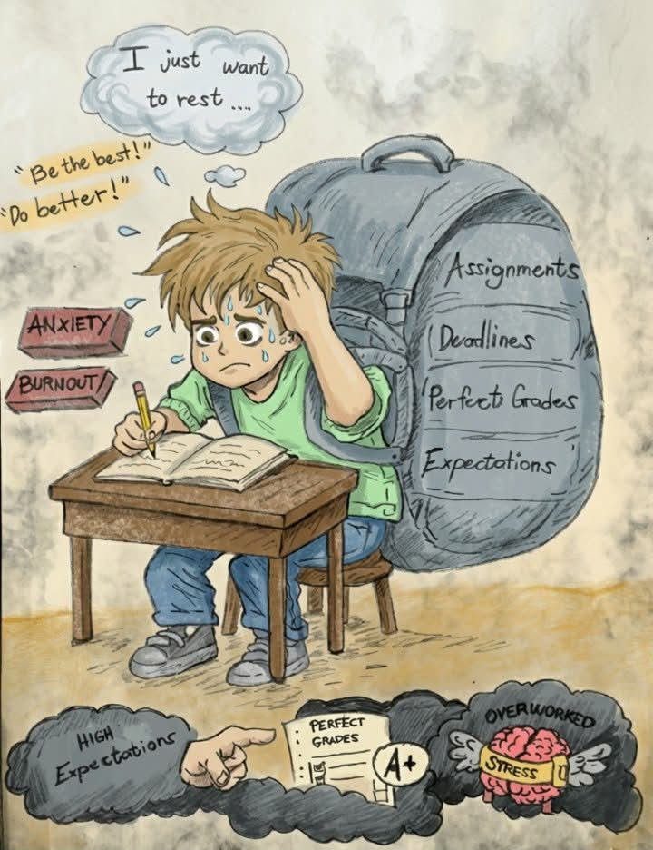
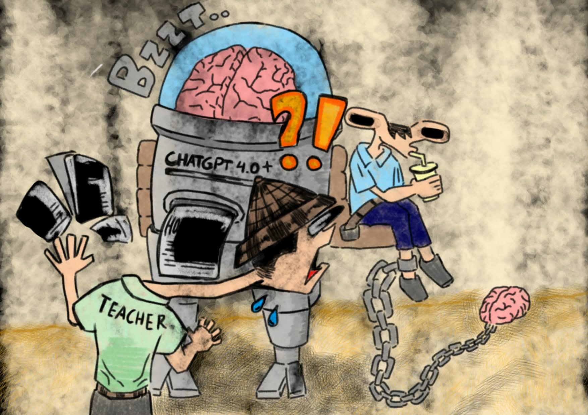

Editorial Page
The Intersection of Student, Learning, and Technology in the Digital Era
“In this new digital era, where technology is rapidly evolving, the way we study, create, and communicate with one another has changed. Today's youth are not just passive observers, they create and shape the digital environment through creativity, teamwork, and critical thinking. This edition reflects that weight by investigating the nexus of digital lives and human needs.”
This issue gathers stories about social media, AI-assisted learning, digital pressure, perseverance, and creative expression. It reminds us that technology does not define the future on its own — the people behind the screens do.
Feature Articles

Youth Identity in the Age of Social Media
A close look at how social media shapes self-worth, beauty standards, expression, and the search for an authentic voice among today's youth.
Read Full Story
Who Holds the Pen? Artificial Intelligence and the Future of Learning
When AI can write, revise, and explain in seconds, the real question becomes whether students are still learning to think for themselves.
Read Full Story
CTRL + S: Saving a Generation
A generation learns through screens, distractions, deadlines, and fatigue while trying to save focus, balance, and purpose in the digital age.
Read Full StoryHuman Interest
Opinion / Column

I Was Supposed to Be the Best. Now, I’m Not.
A deeply personal reflection on academic pressure, shifting expectations, and the quiet fear of no longer being the “smart one.”
Read Full Story
When Prompting Replaced Thinking
An honest reflection on how AI can help with learning, but also tempt students into replacing difficult thinking with easy prompting.
Read Full StoryCreative Works
Cancel Culture Among Youth in the Internet: Accountability or Online Mob Rule?
An exploration of cancel culture, digital accountability, and the line between activism and online mob behavior among young users.
Read Full Story
Version 1.0
A quiet late-night story about debugging, doubt, small victories, and realizing that everyone in Computer Science is still fixing something.
Read Full Story
Wired Dreams
A poem about youth, learning, hope, and the power of technology when guided by imagination, purpose, and responsibility.
Read Full Story
Technology in Learning's Light
A reflective poem on learning through technology with wisdom, honesty, integrity, and care in the digital world.
Read Full Story